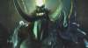
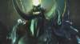

Exodus of the Horde
The young Thrall awakes fom a strange vision, directing him to the prophet Medivh. Medivh tells him to rally the orcs from Lordaeron and travel to Kalimdor, where they shall meet their destiny. He frees the orcs from the remaining internment camps, including Grom Hellscream. The Horde steals the human fleet from Southshore and sail off.
Exodus of the Horde
Near the Maelstrom, they are forced to land on a small island to repair their ships. There they are joined by the Darkspear Trolls, led by Sen'jin, but are soon ambushed and captured by a group of murlocs worshiping a Naga Sea Witch. Thrall and his people need to escape from their underworld prison together with the trolls and flee from the island before it is destroyed by an erupting volcano.
The Scourge of Lordaeron
Prince Arthas, a paladin of the Silver Hand, The Captain and Jaina Proudmoore, Arthas' former lover and apprentice-Archmage, are investigating a strange plague that is spreading across the lands of Lordaeron. To their horror, they find that the plague turns unsuspecting people into hideous Undead warriors, and must move to stop the undead's plans.
The Scourge of Lordaeron
After a string of hollow victories (many towns in the now Plaguelands being destroyed), Arthas decides that the best way to end the game was to destroy Mal'Ganis the (supposed) leader of the scourge. Mal'Ganis travels northward to the icy lands of Northrend, and Arthas follows him.
The Scourge of Lordaeron
There he aids an old friend, Muradin Bronzebeard, who tells him of a powerful weapon, a sword called Frostmourne. Arthas obtains Frostmourne, at the (supposed) cost of Muradin's life, and uses it to defeat Mal'Ganis. However, as a result, Frostmourne steals Arthas' soul and turns to ally the undead...
Path of the Damned
With their new leader, the undead must move to complete their purpose in Lordaeron, which is to destroy the remnants of the Alliance and pave the way for a new invasion.
Path of the Damned
In a series of quests, Arthas succeeds in reviving a former adversary, Kel'Thuzad, as a Lich, and the two successfully open an inter-dimensional portal for the true masters of the Scourge, the Burning Legion, to enter the realm of Azeroth.
The Invasion of Kalimdor
After escaping Human captivity and fleeing to the shores of Kalimdor, orcish warchief Thrall must lead his brethren to safety and ensure their survival in this strange and hostile land. Help comes from the Tauren, a nomadic group of Kalimdor natives, and their leader, Cairne Bloodhoof. Unfortunately, fellow orc Grom Hellscream falls under demonic corruption, and Thrall is forced to ally himself with Jaina Proudmore, now leader of the survivors of Lordaeron.
The Invasion of Kalimdor
He also discovers (courtesy of an oracle) that his fate is to help repel the Burning Legion, and he and Jaina accomplish this goal, and also to save Hellscream. Afterwards, Grom insists upon battling Mannoroth, the demon who cast him into the corruption. Thrall and Grom succeed in vanquishing Mannoroth, but Grom is slain in the process.
Eternity's End
With the coming of the undead and Burning Legion as well as the humans and orcs, Tyrande Whisperwind and her night elf Sentinels fight a desperate battle to save their beloved home of Kalimdor. She first reawakens her lover, Malfurion Stormrage, and then the Druids of the Talon and finally the Druids of the Claw. She also decides to free the great betrayer, Illidan Stormrage, and he is eventually instrumental in weakening the Legion.
Eternity's End
Finally, she and Furion join forces with Proudmoore and Thrall to delay the Legion's advance until a proper end can be arranged for their leader Archimonde (mirroring the final mission of Starcraft, in which the player commands a multi-racial force against a common foe).

 
